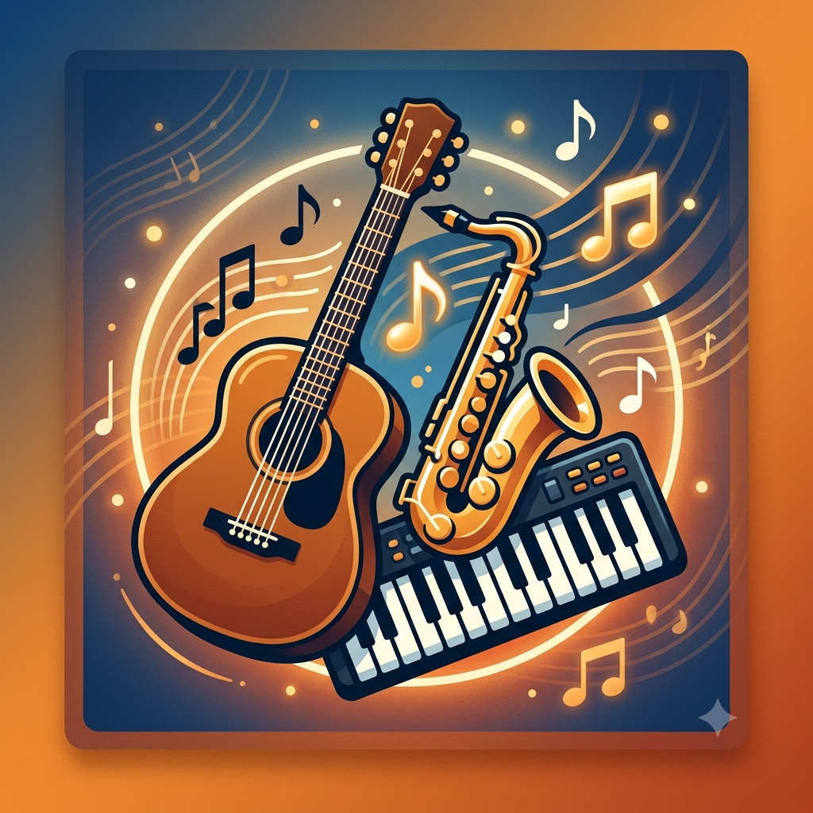

Seja Bem-vindo(a).
Por: Kauan Galvão
Boas-vindas ao meu novo blog! Aqui vou compartilhar dicas e curiosidades sobre música clássica e instumentos músicais.
Aqui vou compartilhar curiosidades sobre música clássica e instrumentos músicais.

Por: Kauan Galvão
Boas-vindas ao meu novo blog! Aqui vou compartilhar dicas e curiosidades sobre música clássica e instumentos músicais.
Por: Kauan Galvão
Tocar um instrumento musical traz benefícios diretos para o cérebro, a saúde mental e a vida social. Desenvolvimento cognitivo: Estimula os dois lados do cérebro simultaneamente, aprimorando a memória, a concentração, o raciocínio lógico-matemático e a capacidade de resolver problemas. Saúde mental e alívio do estresse: Funciona como uma válvula de escape criativa, reduzindo os níveis de ansiedade e cortisol, além de promover a liberação de dopamina (hormônio do bem-estar). Coordenação motora: Exige o uso simultâneo de mãos, olhos e audição, melhorando a agilidade, o tempo de resposta e a percepção espacial. Disciplina e paciência: O processo de aprendizagem desenvolve a resiliência e a capacidade de focar em metas de longo prazo, reforçando o valor da prática constante. Expressão emocional e criatividade: Oferece uma linguagem não verbal para canalizar sentimentos, ideias e estados de espírito de forma única. Conexão social: Facilita a interação com outros músicos, a participação em bandas ou orquestras e o fortalecimento de laços em comunidades culturais.

Por: Kauan Galvão
É um instrumento de cordas pinçadas acionado por um teclado, popular entre os séculos XVI e XVIII. Ao pressionar uma tecla, uma pequena palheta (plectro) belisca a corda correspondente, gerando um som metálico, brilhante e distinto, sem variação de volume por intensidade de toque.